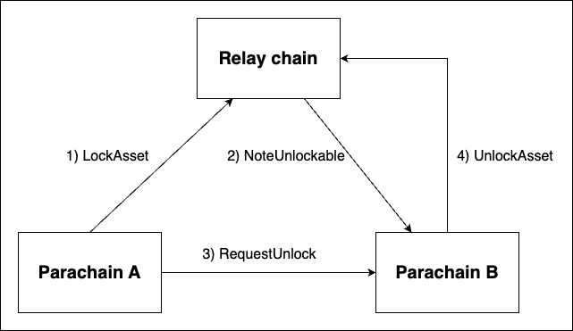

Locking
Assets can be locked via XCM, meaning, the transfer or withdrawal of assets can be restricted via messages.
The XCM locking mechanism consists of four instructions: LockAsset, UnlockAsset, NoteUnlockable, and RequestUnlock.
Let's explore each instruction in detail:
LockAsset
LockAsset { asset: MultiAsset, unlocker: MultiLocation }The LockAsset instruction is used to lock locally held assets and prevent further transfers or withdrawals. This instruction requires two parameters:
asset: The asset(s) to be locked.unlocker: The MultiLocation that can unlock the asset(s). This value must match the origin of a correspondingUnlockAssetinstruction to unlock the asset.
When the locking operation succeeds, a NoteUnlockable instruction is sent to the unlocker.
This instruction serves as a notification that the asset is now unlockable.
UnlockAsset
UnlockAsset { asset: MultiAsset, target: MultiLocation }The UnlockAsset instruction removes the lock on a specific asset on the local chain, allowing it to be transferred if there are no other restrictions.
The following parameters are required:
asset: The asset to be unlocked.target: The owner of the asset on the local chain.
NoteUnlockable
NoteUnlockable { asset: MultiAsset, owner: MultiLocation }The NoteUnlockable instruction indicates that an asset has been locked on the system which the message originated from.
The locked assets can only be unlocked by receiving an UnlockAsset instruction from this chain.
This instruction requires the following parameters:
asset: The asset(s) which are now unlockable from this origin.owner: The owner of the asset on the chain in which it was locked. This may be a location specific to the origin network. The owner can request this origin to unlock the assets using aRequestUnlockinstruction. However, the owner is not able to unlock the assets themselves.
It is essential to trust the origin to have locked the corresponding asset before sending this message.
RequestUnlock
RequestUnlock { asset: MultiAsset, locker: MultiLocation }The RequestUnlock instruction is used to send an UnlockAsset instruction to the locker for a given asset.
The following parameters are required:
asset: The asset(s) to be unlocked.locker: The location from which a previousNoteUnlockablewas sent, and where theUnlockAssetinstruction should be sent.
Example
To get a better grasp on how these instructions work together, we give two examples in this section.
The examples use the xcm-executor with the pallet-xcm as the implementation for the AssetLocker config item.
An important note of this implementation is that only one lock with ID py/xcmlk is set per account.
The pallet-xcm implementation keeps track of all the xcm-related locks that are placed on an account and sets the most restricting one with the py/xcmlk lock ID.
This principle becomes more clear in the second example.
Example 1
Check out the full example code. The scenario of this example is as follows:
Parachain A locks 5 Cents of relay chain native assets of its Sovereign account on the relay chain and assigns Parachain B as unlocker. Parachain A then asks Parachain B to unlock the funds partly. Parachain B responds by sending an UnlockAssets instruction to the relay chain.

- send
LockAssetinstruction from ParaA to relay.
ParaA::execute_with(|| {
let message = Xcm(vec![LockAsset {
asset: (Here, CENTS * 5).into(),
unlocker: (Parachain(2)).into(),
}]);
assert_ok!(ParachainPalletXcm::send_xcm(Here, Parent, message.clone()));
});- Parachain B receives this
NoteUnlockableinstruction from the relay chain.
NoteUnlockable {
owner: (Parent, Parachain(1)).into(),
asset: (Parent, CENTS * 5).into()
}- Parachain A sends
RequestUnlockinstruction to Parachain B
ParaA::execute_with(|| {
let message = Xcm(vec![RequestUnlock {
asset: (Parent, 3 * CENTS).into(),
locker: Parent.into(),
}]);
assert_ok!(ParachainPalletXcm::send_xcm(Here, (Parent, Parachain(2)), message.clone()));
});- Parachain B sends an
UnlockAssetinstruction to the relay chain. We check if the lock is updated accordingly:
assert_eq!(
relay_chain::Balances::locks(¶chain_sovereign_account_id(1)),
vec![BalanceLock { id: *b"py/xcmlk", amount: 2 * CENTS, reasons: Reasons::All }]
);Example 2
Check out the full example code. The scenario of this example is as follows:
Parachain A sets two locks on the relay chain with as unlockers Parachain B and Parachain C. Parachain A then requests Parachain B to partly unlock.
Note: The locks overlap. When there are two or more locks, the total assets that are locked is equal to the most restrictive lock (the lock that locks the most assets). When the most restrictive lock is unlocked, the total locked assets is than equal to the next most restrictive lock.

- Set locks on the relay chain. Unlockers: B, C; Locks registered in pallet-xcm: 10, 5. Lock set in pallet-balances: 10.
ParaA::execute_with(|| {
let message = Xcm(vec![
LockAsset { asset: (Here, 10 * CENTS).into(), unlocker: (Parachain(2)).into() },
LockAsset { asset: (Here, 5 * CENTS).into(), unlocker: (Parachain(3)).into() },
]);
assert_ok!(ParachainPalletXcm::send_xcm(Here, Parent, message.clone()));
});
Relay::execute_with(|| {
assert_eq!(
relay_chain::Balances::locks(¶chain_sovereign_account_id(1)),
vec![BalanceLock { id: *b"py/xcmlk", amount: 10 * CENTS, reasons: Reasons::All }]
);
});- Parachain B and C receive the
NoteUnlockableinstruction.
ParaB::execute_with(|| {
assert_eq!(
parachain::MsgQueue::received_dmp(),
vec![Xcm(vec![NoteUnlockable {
owner: (Parent, Parachain(1)).into(),
asset: (Parent, 10 * CENTS).into()
}])]
);
});
ParaC::execute_with(|| {
assert_eq!(
parachain::MsgQueue::received_dmp(),
vec![Xcm(vec![NoteUnlockable {
owner: (Parent, Parachain(1)).into(),
asset: (Parent, 5 * CENTS).into()
}])]
);
});- Parachain A sends a
RequestUnlockinstruction to Parachain B for 8 CENTS.
ParaA::execute_with(|| {
let message = Xcm(vec![RequestUnlock {
asset: (Parent, 8 * CENTS).into(),
locker: Parent.into(),
}]);
assert_ok!(ParachainPalletXcm::send_xcm(Here, (Parent, Parachain(2)), message.clone()));
});- Parachain B Unlocks a part of the funds by sending an
UnlockAssetto the relay chain. we check the lock in the balances-pallet. Unlockers: B, C; Funds registered in pallet-xcm: 2, 5. Lock set in pallet-balances: 5.
Relay::execute_with(|| {
assert_eq!(
relay_chain::Balances::locks(¶chain_sovereign_account_id(1)),
vec![BalanceLock { id: *b"py/xcmlk", amount: 5 * CENTS, reasons: Reasons::All }]
);
});